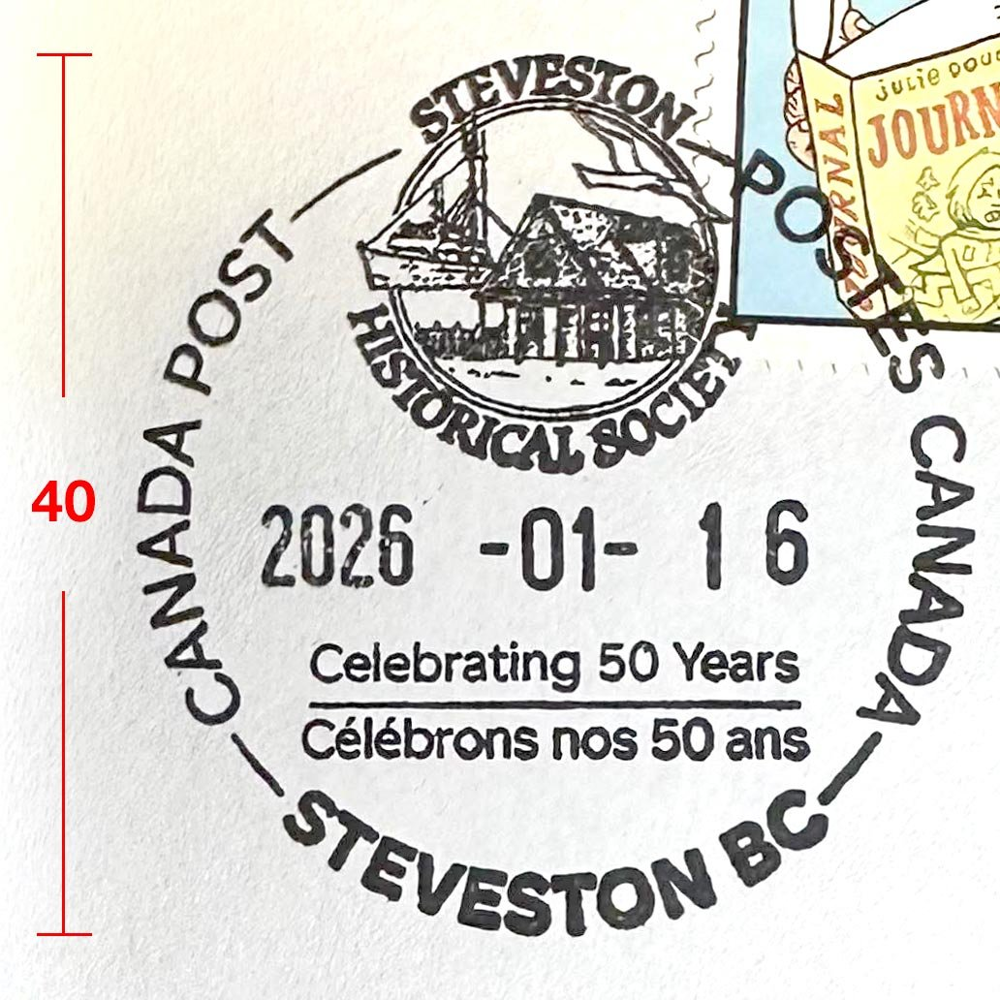

Steveston Museum pictorial cancel
HISTORICAL SOCIETY – CELEBRATING 50 YEARS – Célébrons nos 50 ans · New
- Status
- Active
- Run dates
- 2026-01-01 to present
- Design
- "HISTORICAL SOCIETY / CELEBRATING 50 YEARS / Célébrons nos 50 ans"; Steveston Museum
- Ink colour
- Black
- Designer
- Unknown
- Post office
- Steveston Museum
3811 Moncton St
Richmond, BC
V7E 3A0 - Subjects
- museum, culture, history, building, architecture
Collect it by mail. Send your stamped covers, with a stamped return envelope, to the post office address above. How to collect pictorial cancels by mail · en français
 Steveston MuseumOld
Steveston MuseumOld Vancouver Main Retail Store POHaunted Canada
Vancouver Main Retail Store POHaunted Canada Vancouver Main Retail Store POCityscape
Vancouver Main Retail Store POCityscape Salt Spring Island STN GangesOrca (killer whale), water
Salt Spring Island STN GangesOrca (killer whale), water Salt Spring Island STN Fulford HarbBird, mountain
Salt Spring Island STN Fulford HarbBird, mountain